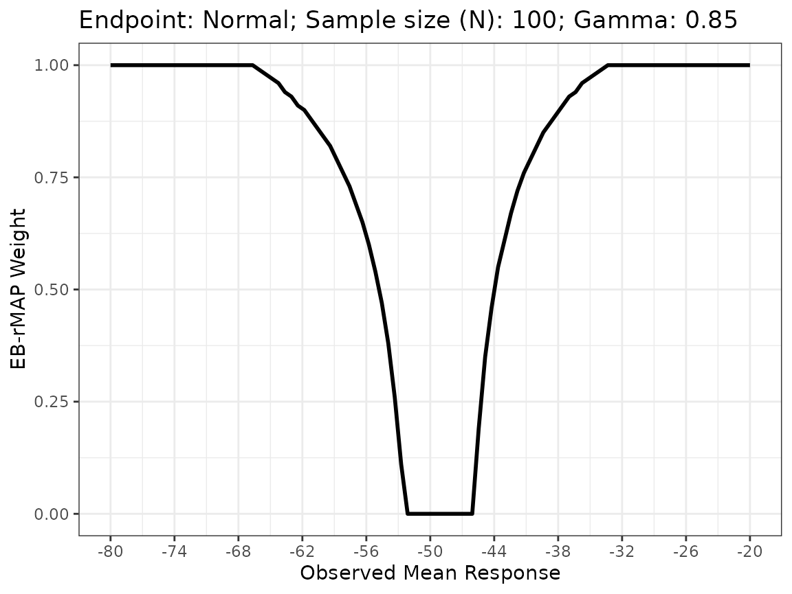
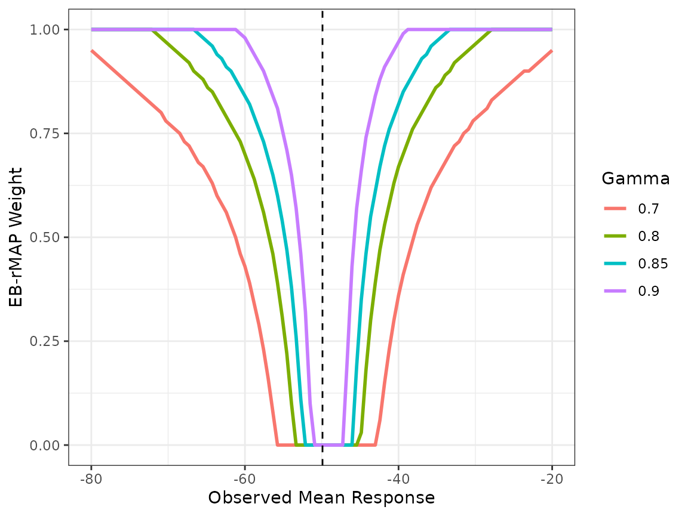

EB-rMAP Prior with a Normal Endpoint
Hongtao Zhang
12/15/2022
normal.RmdWe demonstrate the usage of EB-rMAP when a normal endpoint is considered. The standard deviation of the endpoint is assumed known throughout the case study.
Historical Data and the MAP Prior
The historical data to construct the MAP prior are from dataset
crohn in RBesT package [1]. The data
contain six historical trials in moderate to severe Crohn’s disease. The
normal endpoint is the change from baseline in Crohn’s Disease Activity
Index (CDAI) at week 6, for which a smaller negative value indicates a
better response. The common standard deviation of the endpoint \(\sigma\) is fixed at 88. A random effect
meta-analysis yields a point estimate of -50 for the mean response, with
95% confidence interval (-61.7, -38.1).
library(RBesT)
library(tidyverse)
library(EBrmap)
dt <- RBesT::crohn
sigma <- 88
dt$se_yh <- sigma/sqrt(dt$n)
kableExtra::kable(dt)| study | n | y | se_yh |
|---|---|---|---|
| Gastr06 | 74 | -51 | 10.229792 |
| AIMed07 | 166 | -49 | 6.830125 |
| NEJM07 | 328 | -36 | 4.858987 |
| Gastr01a | 20 | -47 | 19.677398 |
| APhTh04 | 25 | -90 | 17.600000 |
| Gastr01b | 58 | -54 | 11.554966 |
The MAP prior is derived using the RBesT::gMAP
command, which is subsequently approximated by a mixture of three
conjugate normal distributions with
RBesT::automixfit command.
The vauge prior to construct the robust MAP prior is a normal
distribution with mean -50 and effective sample size of 1. This can be
specified using the mn parameterization in
RBesT::mixnorm. Note that the hyper-parameters are
automatically converted to ms parameterization
corresponding to mean and standard deviation.
For detailed specifications, refer to Section 3.1 of Zhang et al. [2]
set.seed(712)
map_mcmc <- gMAP(cbind(y, se_yh) ~ 1 | study,
weight = n,
data=dt,
family=gaussian,
beta.prior=cbind(0, sigma),
tau.dist="HalfNormal",tau.prior=cbind(0,sigma/2))
map_hat <- automixfit(map_mcmc)
sigma(map_hat) <- sigma
vague_prior <- mixnorm(c(1, -50, 1), sigma=sigma, param="mn")
print(map_hat)
#> EM for Normal Mixture Model
#> Log-Likelihood = -17266.18
#>
#> Univariate normal mixture
#> Reference scale: 88
#> Mixture Components:
#> comp1 comp2 comp3 comp4
#> w 0.48262610 0.41389189 0.06790148 0.03558052
#> m -46.68513756 -51.27537075 -63.24087734 -53.49794772
#> s 7.85276132 24.99653345 7.81928574 53.01822291
print(vague_prior)
#> Univariate normal mixture
#> Reference scale: 88
#> Mixture Components:
#> comp1
#> w 1
#> m -50
#> s 88EB-rMAP Prior
We design a current two-arm trial with sample sizes in control and
treatment arms respectively at \(n_C=50\) and \(n_T=100\). The general principle is to
evaluate the EB-rMAP weight \(w_{EB}\)
within a reasonably wide range of observed mean response \(\bar{y}_C\). In this case study, we set the
range to be -80 to -20, which is even wider than the 95% confidence
interval by the meta analysis, and thus should yield a comprehensive
view of the behavior of \(w_{EB}\)
across various scenarios. We first set \(\gamma\) at 0.85 and plot.
EB_rMAP is the function that implements the
EB-rMAP prior method.
plot(obj1)
In order to tune the EB-rMAP prior method, it would be more helpful if we overlay multiple plots of \(w_{EB}\) corresponding to different \(\gamma\)s on the same plot. This can be easily done with creating multiple EB-rMAP objects and minimal data manipulation. For example, we also consider \(\gamma=\) 0.7, 0.8 and 0.9. The vertical dashed line at -49.9 in the plot represents the point estimate of historical mean response by the meta-analysis.
obj2 <- EB_rMAP(map_hat, vague_prior, ppp_cut=0.7, n=100, y_range=c(-80, -20))
obj3 <- EB_rMAP(map_hat, vague_prior, ppp_cut=0.8, n=100, y_range=c(-80, -20))
obj4 <- EB_rMAP(map_hat, vague_prior, ppp_cut=0.9, n=100, y_range=c(-80, -20))
plotdt1 <- obj1$wdt %>% mutate(Gamma=obj1$ppp_cut)
plotdt2 <- obj2$wdt %>% mutate(Gamma=obj2$ppp_cut)
plotdt3 <- obj3$wdt %>% mutate(Gamma=obj3$ppp_cut)
plotdt4 <- obj4$wdt %>% mutate(Gamma=obj4$ppp_cut)
plotdt <- rbind(plotdt1, plotdt2, plotdt3, plotdt4)
plotdt %>%
ggplot(aes(x=y, y = w_eb, color=factor(Gamma))) + geom_line(size=1) + geom_vline(xintercept=-49.9, linetype="dashed") +
xlab("Observed Mean Response") + ylab("EB-rMAP Weight") + theme_bw() +
scale_color_discrete(name="Gamma")
#> Warning: Using `size` aesthetic for lines was deprecated in ggplot2 3.4.0.
#> ℹ Please use `linewidth` instead.
The generated plot is a useful tool to conduct an initial screen of \(\gamma\) value. For example, a \(\gamma\) of 0.7 might be overly aggressive as there is still considerable amount of borrowing (\(w_{EB}=0.54\)) when the observed mean response \(\bar{y}_C = -62\) which is outside the 95% meta-analysis confidence interval. On the other hand, one could argue that a \(\gamma\) of 0.9 might be conservative. For illustration purposes, we choose \(\gamma=0.85\). In practice, once an initial set of \(\gamma\) values is determined, their performances should be confirmed via simulations in order to select the \(\gamma\) value that yields the most robust performance.
Inference with Observed Current Trial Data
Bayesian inference based on posterior probabilities can be drawn
after the new trial is concluded and the mean responses \(\bar{y}_C\) and \(\bar{y}_T\) are observed. Suppose that
\(\bar{y}_C\) and \(\bar{y}_T\) are -53 and -80, respectively.
The wEB function returns the EB-rMAP weight \(w_{EB}\) corresponding to an observed mean
response \(\bar{y}_C\). This weight
will be used to build the robust MAP prior for the control mean
responses. We draw a sample of size 20,000 from the posterior
distribution of the robust MAP prior.
(w <- wEB(obj1, -53))
#> [1] 0.11
(rmap_c <- robustify(map_hat, weight = w, mean = -50, n=1, sigma = sigma))
#> Univariate normal mixture
#> Reference scale: 88
#> Mixture Components:
#> comp1 comp2 comp3 comp4 robust
#> w 0.42953723 0.36836378 0.06043232 0.03166666 0.11000000
#> m -46.68513756 -51.27537075 -63.24087734 -53.49794772 -50.00000000
#> s 7.85276132 24.99653345 7.81928574 53.01822291 88.00000000
(postmix_rmap_c <- postmix(rmap_c, n = 50, m = -53))
#> Using default prior reference scale 88
#> Univariate normal mixture
#> Reference scale: 88
#> Mixture Components:
#> comp1 comp2 comp3 comp4 robust
#> w 0.59380430 0.29368965 0.07194565 0.01296934 0.02759105
#> m -48.48342373 -52.65742172 -60.34236670 -53.02600372 -52.94117647
#> s 6.64117806 11.14068322 6.62089251 12.11577029 12.32246474
post_rmap_c <- rmix(mix = postmix_rmap_c, n = 20000)The treatment arm in the current trial will not be augmented by historical data. We therefore use the same vague prior in the rMAP prior for its mean response, and also draw a posterior sample of size 20,000.
prior_t <- mixnorm(c(1, -50, 1), sigma=sigma, param="mn")
postmix_t <- postmix(prior_t, n = 100, m = -80)
#> Using default prior reference scale 88
post_t <- rmix(mix = postmix_t, n = 20000)Finally, the decision rule to claim trial success is \(Pr(\theta_T-\theta_C<0|data)>0.95\). This can be evaluated by the following codes. Since the posterior probability 0.987 exceeds the cutoff 0.95, a trial success can be called.
diff_sample <- post_t - post_rmap_c
mean(diff_sample < 0)
#> [1] 0.9869References
[1] Weber, S., Li, Y., Seaman III, J. W., Kakizume, T., Schmidli, H. (2021). Applying Meta-Analytic-Predictive Priors with the R Bayesian Evidence Synthesis Tools. Journal of Statistical Software, 100, 1-32.
[2] Zhang, H., Shen, Y., Li, J., Ye, H., Chiang, AY. (2023+). Adaptively Leveraging External Data with Robust Meta-Analytical-Predictive Prior Using Empirical Bayes.